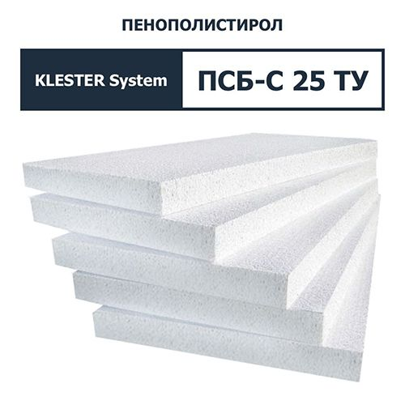
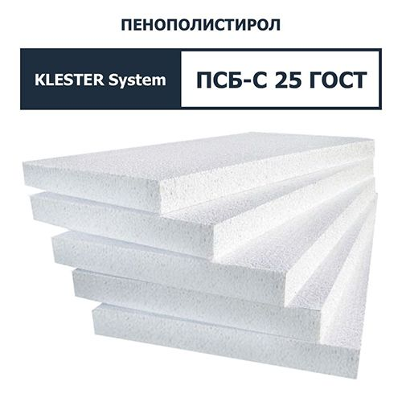

Каталог
-
ПСБ-С 15 ТУ
Применяется:
Внутренние перегородки.
Межэтажные и чердачные перекрытия по лагам.
Утепление балконов, бытовок, контейнеров.Технические характеристики: «KLESTER System — ПСБ-С 15 ТУ»
Стандартные толщины 50 / 80 / 100 мм Количество плит в упаковке 12 / 7 / 6 шт. Плотность 9 кг/м3 Теплопроводность 0,044 Вт/м·К Прочность на сжатие 42 кПа Прочность на разрыв 50 кПа Предел прочности при изгибе 50 кПа Водопоглощение по объему за 24ч 2,5% Группа горючести Г3 -

ПСБ-С 15 ГОСТ
Применяется:
Внутренние перегородки.
Межэтажные и чердачные перекрытия по лагам.
Утепление балконов, бытовок, контейнеров.Технические характеристики: «KLESTER System — ПСБ-С 15 ГОСТ»
Стандартные толщины 30 / 50 / 80 / 100 мм Количество плит в упаковке 20 / 12 / 7 / 6 шт. Плотность 11 кг/м3 Теплопроводность 0,043 Вт/м·К Прочность на сжатие 50 кПа Прочность на разрыв 70 кПа Предел прочности при изгибе 65 кПа Водопоглощение по объему за 24ч 2,5% Группа горючести Г3 -
 ПСБ-С 25 ТУ
Применяется:
Утепление фасадов.
Трехслойные стены с защитно-декоративным слоем из кирпича.
Производство сэндвич-панелей.
Утепление лоджий и балконов.Технические характеристики: «KLESTER System — ПСБ-С 25 ТУ»
Стандартные толщины 30 / 50 / 80 / 100 мм Количество плит в упаковке 20 / 12 / 7 / 6 шт. Плотность 13 кг/м3 Теплопроводность 0,039 Вт/м·К Прочность на сжатие 60 кПа Прочность на разрыв 100 кПа Предел прочности при изгибе 100 кПа Водопоглощение по объему за 24ч 2% Группа горючести Г3 -
 ПСБ-С 25 ГОСТ
Применяется:
Утепление фасадов.
Трехслойные стены с защитно-декоративным слоем из кирпича.
Производство сэндвич-панелей.
Утепление лоджий и балконов.Технические характеристики: «KLESTER System — ПСБ-С 25 ГОСТ»
Стандартные толщины 30 / 50 / 80 / 100 мм Количество плит в упаковке 20 / 12 / 7 / 6 шт. Плотность 15 кг/м3 Теплопроводность 0,038 Вт/м·К Прочность на сжатие 70 кПа Прочность на разрыв 110 кПа Предел прочности при изгибе 110 кПа Водопоглощение по объему за 24ч 2% Группа горючести Г3 -

ПСБ-С 35 ТУ
Применяется:
Полы под стяжку.
Тёплый пол.
Стены в подвальных помещениях.
Утепление фундамента.Технические характеристики: «KLESTER System — ПСБ-С 35 ТУ»
Стандартные толщины 30 / 50 / 80 / 100 мм Количество плит в упаковке 20 / 12 / 7 / 6 шт. Плотность 17 кг/м3 Теплопроводность 0,036 Вт/м·К Прочность на сжатие 80 кПа Прочность на разрыв 115 кПа Предел прочности при изгибе 125 кПа Водопоглощение по объему за 24ч 2% Группа горючести Г3 -

ПСБ-С 35 ТУ Супер
Применяется:
Полы под стяжку.
Тёплый пол.
Стены в подвальных помещениях.
Утепление фундамента.Технические характеристики: «KLESTER System — ПСБ-С 35 ТУ Супер»
Стандартные толщины 30 / 50 / 80 / 100 мм Количество плит в упаковке 20 / 12 / 7 / 6 шт. Плотность 19 кг/м3 Теплопроводность 0,035 Вт/м·К Прочность на сжатие 100 кПа Прочность на разрыв 125 кПа Предел прочности при изгибе 135 кПа Водопоглощение по объему за 24ч 2% Группа горючести Г3